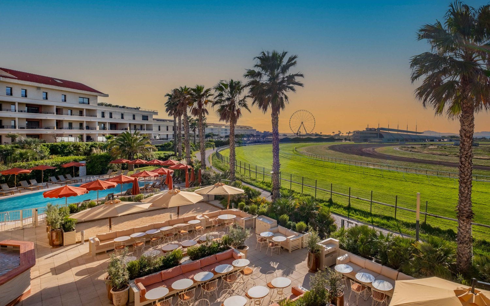
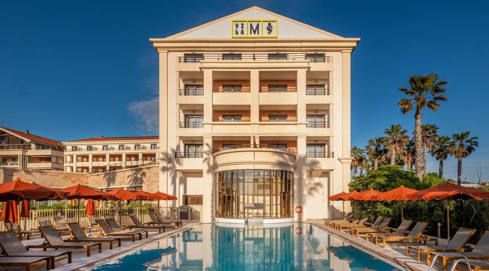
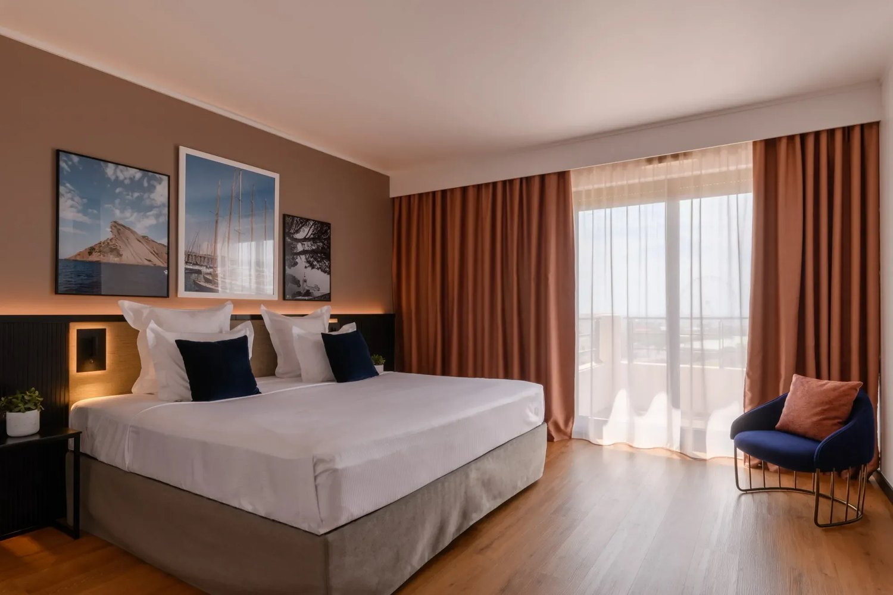
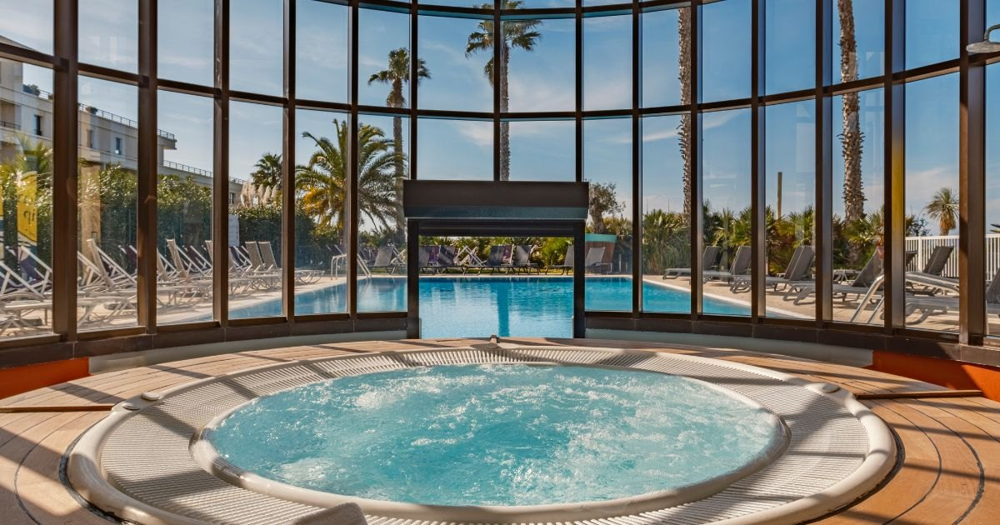
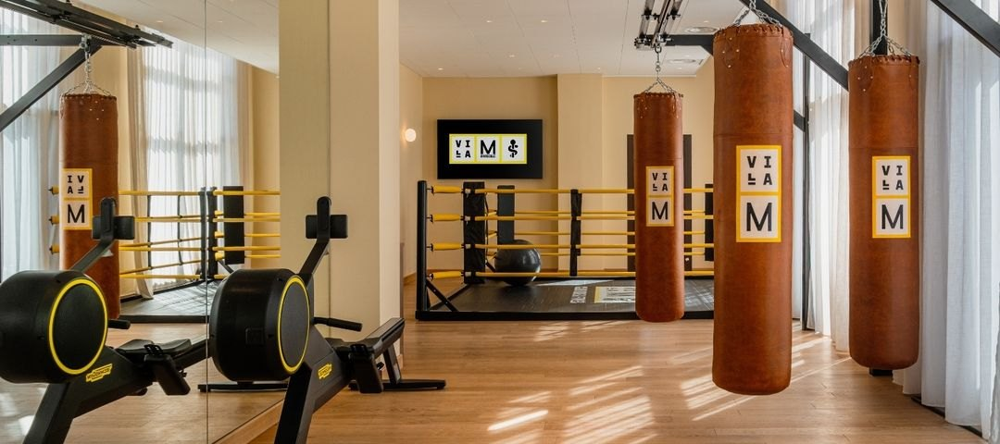
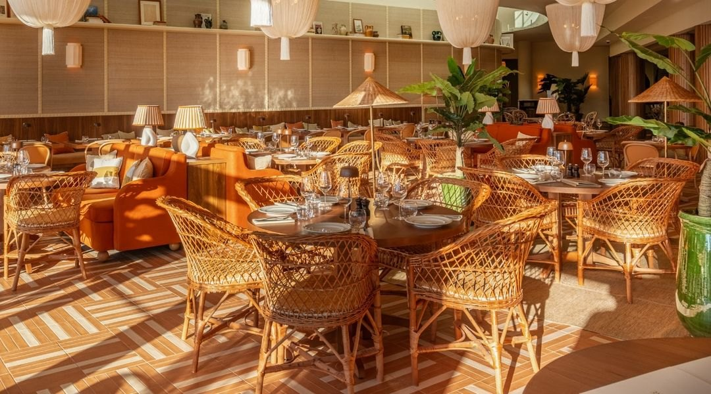

Villa M, à Marseille : l'hôtel qu'a construit une mutuelle de santé
Cent quarante clés, un spa, un club de boxe et un centre de prévention et de soins sous le même toit. Ouvert en mai 2025 face à l'hippodrome du Prado.

La grande terrasse, face à l'hippodrome et à la grande roue du Prado. Photo : Villa M Marseille, site officiel.
L'essentielCe qui distingue vraiment cette maison
- Un hôtel construit par une mutuelle. La maison appartient au Groupe Pasteur Mutualité, dont la vision est de créer des lieux où la santé dialogue avec l'hospitalité. Ce n'est pas un slogan : il y a un centre de prévention et de soins dans le bâtiment.
- Un spa complet et un club de boxe. Piscine intérieure, sauna, hammam, soins et massages signés Deep Nature, protocoles de cryothérapie, et un club de boxe sous le même toit.
- Cent quarante clés face au Prado. Certaines donnent sur l'hippodrome et la plage. C'est une échelle de resort urbain, pas de maison de charme, et cela change tout ce qu'on peut en attendre.
Il y a des hôtels qui ajoutent un spa parce que le marché l'exige, et d'autres dont le bien-être est la raison sociale. La Villa M appartient à la seconde catégorie, pour une raison qui n'a rien d'anecdotique : son propriétaire est une mutuelle de santé. Nous l'évaluons 9,0/10 au Score LMHS, avec un Indice Méditerranée de 4,6/5, notre indice thématique pour cette page.
Le pari du Groupe Pasteur Mutualité
La Villa M a ouvert en mai 2025 dans le 8e arrondissement de Marseille, face à l'hippodrome Borély et à quelques centaines de mètres des plages du Prado. Elle est portée par Thierry Lorente, directeur, et Amanda Lehmann, directrice adjointe du Groupe Pasteur Mutualité, déjà aux commandes de la Villa M parisienne, un 4 étoiles du 15e arrondissement. La maison marseillaise est la deuxième adresse de la marque, et la première hors de Paris.
Le programme du groupe tient en une phrase que ses dirigeants répètent volontiers : mieux dormir, mieux manger, travailler autrement et rester actif. Formulé ainsi, cela ressemble à ce que promet n'importe quel hôtel contemporain. Ce qui rend la promesse crédible ici, c'est qu'elle est inscrite dans le bâti plutôt que dans la brochure. La maison réunit sous un même toit un centre de prévention et de soins, un club de boxe et un spa. Très peu d'hôtels français peuvent en dire autant, et aucun pour cette raison-là : ils ajoutent des services, quand la Villa M prolonge le métier de son actionnaire.
C'est une distinction qui change la lecture de tout le reste. Le club de boxe n'est pas un argument de communication posé à côté du hammam, il relève de la même logique. Les protocoles de cryothérapie ne sont pas un supplément de confort, ils appartiennent au registre du soin. On peut trouver la démarche systématique, mais elle est cohérente de bout en bout, et c'est assez rare dans cette catégorie pour être signalé.

La façade et la piscine extérieure. Photo : Villa M Marseille, site officiel.
Friedmann & Versace : une palette solaire
L'architecture intérieure est signée du studio Friedmann & Versace, qui a construit un décor où la chaleur du sud passe par les matériaux plutôt que par les effets : ocres profonds, jaunes safran, bois brut et objets d'artisanat local. Dès le lobby, la générosité des volumes et la clarté de la lumière posent une ambiance riviera qui ne se dément pas dans les étages. Le parti pris est chaleureux plutôt que spectaculaire, ce qui, sur cent quarante clés, était probablement le bon calcul : un geste plus démonstratif aurait mal vieilli à cette échelle.
Une précision de lecture, parce qu'elle circule à l'envers un peu partout : Philippe Starck a signé la Villa M de Paris, pas celle de Marseille. L'adresse marseillaise est entièrement l'œuvre de Friedmann & Versace, et confondre les deux revient à priver le studio de son travail. C'est le genre d'erreur qui se recopie ensuite d'article en article, et nous préférons la corriger que la propager.
Cent quarante clés, certaines sur l'hippodrome
La maison compte 140 chambres et suites. Certaines donnent sur l'hippodrome et sur la plage du Prado, et c'est la demande à formuler à la réservation : sur cent quarante clés, toutes n'ont évidemment pas cette exposition, et l'écart d'expérience entre une chambre côté hippodrome et une chambre côté rue est considérable. Aucun établissement de cette taille ne peut promettre la vue à tout le monde ; encore faut-il la demander.
Les chambres reprennent la palette des parties communes, ocres et safran, bois clair et textiles chauds, avec un mobilier sobre qui laisse la lumière faire le travail. Le format est celui d'un 4 étoiles urbain contemporain, confortable et fonctionnel, sans les excès décoratifs qui datent une maison en cinq ans.

Une chambre de la maison. Photo : Villa M Marseille, site officiel.
Le spa, la cryothérapie et le club de boxe
Le spa réunit une piscine intérieure, un sauna, un hammam, ainsi que des soins et massages signés Deep Nature. Jusque-là, l'équipement est celui qu'on attend d'un bon 4 étoiles avec spa. Ce qui le distingue tient à la ligne suivante : la maison propose des protocoles de cryothérapie, qui relèvent de la récupération et du soin bien plus que du confort. C'est ce qui sépare la Villa M des autres spas d'hôtel marseillais, et c'est directement lié à l'identité de son propriétaire.

La piscine intérieure du spa, sous sa rotonde vitrée. Photo : Villa M Marseille, site officiel.
La distinction suivante compte tout autant : la maison ne propose pas un coin fitness mais un véritable club de boxe, avec sacs et ring. C'est cohérent avec le programme du groupe, « rester actif », et c'est un équipement qu'on ne trouve dans aucun autre hôtel de cette catégorie à Marseille. Là encore, l'installation ne se comprend qu'en remontant à l'actionnaire : une mutuelle de santé qui ouvre un hôtel ne met pas trois vélos elliptiques dans un sous-sol, elle installe un lieu où l'on s'entraîne vraiment.

Le club de boxe, sous le même toit que le spa. Photo : Villa M Marseille, site officiel.
Le restaurant et la grande terrasse
C'est au restaurant et sur la grande terrasse que bat le cœur de la maison, autour d'une cuisine ensoleillée, simple et méditerranéenne. La vue porte sur la grande roue du Prado et sur l'hippodrome, ce qui donne à l'endroit une identité marseillaise immédiate, sans avoir besoin de la souligner.
L'endroit fonctionne aussi bien pour un déjeuner d'affaires que pour un dîner en famille ou un apéritif, et c'est précisément cette porosité qui fait l'esprit convivial revendiqué par la maison. Sur une adresse de cette taille, avoir un lieu qui rassemble les clients de l'hôtel, les congressistes et les Marseillais de passage n'est pas acquis d'avance.

La salle du restaurant, dans la palette ocre et safran de la maison. Photo : Villa M Marseille, site officiel.
Ce que la maison propose aux voyageurs d'affaires
L'équipement est dimensionné pour les séminaires : un centre de conférences de 1 000 m2 et des salles de coworking. S'y ajoutent deux espaces de détente que peu d'hôtels assument dans leur communication, une salle d'arcade et un terrain de pétanque.
Sur le papier, cela ressemble à un inventaire. En pratique, c'est ce qui permet à un séminaire de durer trois jours sans que personne ne quitte le bâtiment, et c'est probablement là que la maison est la plus difficile à concurrencer localement : mille mètres carrés de conférences, un spa, un club de boxe, une piscine et une terrasse au même endroit, c'est une combinaison que Marseille n'offrait pas.
Villa M Marseille en bref
| Adresse | 17 place Louis Bonnefon, 13008 Marseille |
| Téléphone | +33 4 91 72 90 00 (réception), +33 4 91 72 90 40 (réservations) |
| Catégorie | 4 étoiles |
| Ouverture | Mai 2025 |
| Capacité | 140 chambres et suites |
| Propriétaire | Groupe Pasteur Mutualité, deuxième adresse après Villa M Paris |
| Direction | Thierry Lorente et Amanda Lehmann |
| Architecture intérieure | Studio Friedmann & Versace |
| Spa | Piscine intérieure, sauna, hammam, soins Deep Nature, cryothérapie |
| Santé et sport | Centre de prévention et de soins, club de boxe |
| Affaires | Centre de conférences de 1 000 m², salles de coworking |
| Loisirs | Salle d'arcade, terrain de pétanque, restaurant et grande terrasse |
| Score LMHS | 9,0/10 · Indice Méditerranée 4,6/5 |
Adresse, téléphones et classement relevés le 2 septembre 2026 sur le site officiel de l'établissement. Aucun tarif n'est publié dans cette page, faute d'en trouver à la source.
Pour qui cette maison est faite
Pour les séjours où le bien-être n'est pas un supplément mais le motif du voyage : la combinaison spa, cryothérapie, club de boxe et centre de soins n'a pas d'équivalent local, et c'est la première raison de venir. Pour les séminaires, ensuite, avec mille mètres carrés de conférences et de quoi occuper les soirées sans sortir. Et pour les familles, grâce à une échelle qui laisse toujours de la place, ce qui n'est pas le cas des petites maisons de charme en pleine saison.
Ce n'est en revanche pas une maison de charme, et il faut le savoir avant de réserver : cent quarante clés, c'est un format de resort urbain, avec ce que cela suppose d'affluence dans les parties communes aux heures de pointe. Ce n'est pas non plus une adresse de bord de mer au sens strict, même si les plages du Prado sont à quelques centaines de mètres. Et le centre historique de Marseille, le Vieux-Port et le Panier demandent un trajet.
Questions fréquentes sur la Villa M Marseille
Combien de chambres compte la Villa M Marseille ?
140 chambres et suites, dont certaines donnent sur l'hippodrome et la plage du Prado. C'est la demande à formuler à la réservation : toutes n'ont pas cette exposition.
Que propose le spa de la Villa M ?
Une piscine intérieure, un sauna, un hammam, des soins et massages signés Deep Nature et des protocoles de cryothérapie. La maison abrite par ailleurs un club de boxe et un centre de prévention et de soins, ce qui découle directement de son propriétaire, le Groupe Pasteur Mutualité.
Qui a conçu la décoration de la Villa M Marseille ?
Le studio Friedmann & Versace, autour d'une palette solaire faite d'ocres profonds, de jaunes safran, de bois brut et d'objets d'artisanat local. Attention à une confusion fréquente : Philippe Starck a signé la Villa M de Paris, dans le 15e arrondissement, et non celle de Marseille.
Quand la Villa M Marseille a-t-elle ouvert ?
En mai 2025, dans le 8e arrondissement, au 17 place Louis Bonnefon. C'est la deuxième adresse Villa M du Groupe Pasteur Mutualité, après celle de Paris, sous la direction de Thierry Lorente et Amanda Lehmann.
La Villa M convient-elle à un séminaire ?
C'est l'un de ses points forts. La maison dispose d'un centre de conférences de 1 000 m2 et de salles de coworking, complétés par une salle d'arcade, un terrain de pétanque, un club de boxe et un spa. De quoi tenir plusieurs jours sans quitter le bâtiment.
La Villa M est-elle proche des plages ?
Oui. Elle se trouve dans le 8e arrondissement, face à l'hippodrome et à la plage du Prado. Le Vieux-Port et le centre historique demandent en revanche un trajet.
Le mot de LucasQuand le propriétaire change tout
On juge d'ordinaire un hôtel sur ce qu'il propose. Ici, il faut d'abord regarder qui le possède. Une mutuelle de santé qui ouvre un hôtel n'ajoute pas un spa pour cocher une case : elle installe un centre de prévention et de soins dans le bâtiment, un club de boxe à côté du hammam, et des protocoles de cryothérapie là où d'autres mettent une cabine de plus. Le résultat ne ressemble à aucun autre 4 étoiles marseillais, et c'est ce qui me retient. Reste la contrepartie, que je ne cache pas : cent quarante clés, ce n'est pas une maison, c'est un lieu. On y vient pour ce qu'on y fait, pas pour s'y sentir chez soi.
Lucas Lecoq, rédacteur en chef
Méthode et sources
Avis documentaire. Nous n'avons pas séjourné dans cet établissement. Capacité, équipements, offre bien-être, direction et conception relevés le 2 septembre 2026. Adresse, téléphones et classement en étoiles vérifiés sur le site officiel de l'établissement. Aucun tarif n'est publié dans cette page : la maison n'en affiche pas sur son site, et nous ne reprenons pas un prix d'appel que nous ne pouvons pas vérifier à la source. Le Score LMHS sur 10 relève de la grille LMHS Destination ; l'Indice Méditerranée sur 5 est un indice thématique propre à cette page, qui mesure l'ancrage territorial. Aucun partenariat commercial, aucune affiliation. Photographies : Villa M Marseille, site officiel.
Pour aller plus loin
- Les meilleurs hôtels de Marseille, notre palmarès de la ville
- Hôtel & Spa du Castellet, l'autre grande adresse bien-être de la région, à une heure de route
- Les 50 meilleurs hôtels et spas de France, palmarès national 2026
- Notre méthode, les grilles de notation et les règles d'indépendance